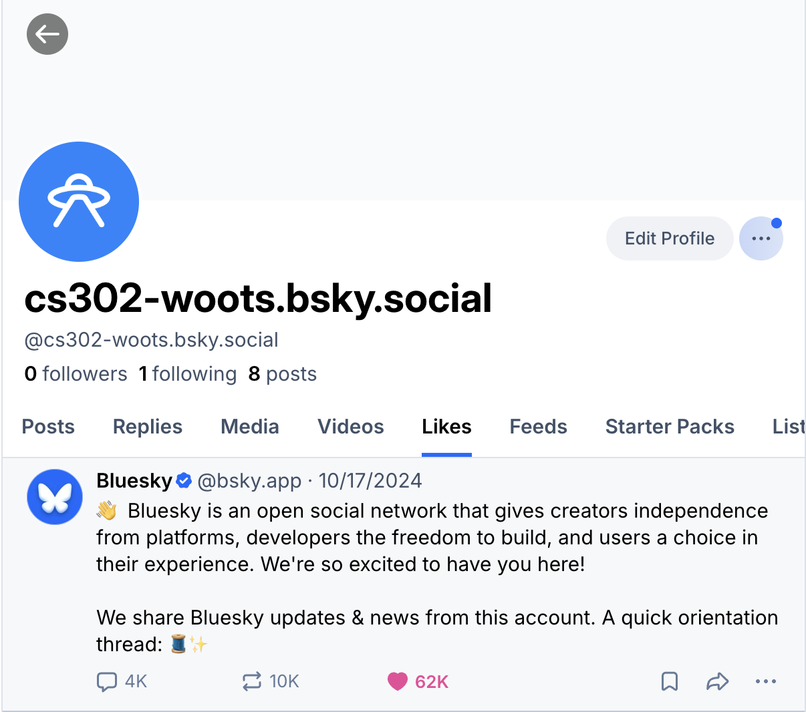

The two-bit addition calculator implements a series of evaluations in the form
of a half and full adder to successfully output correct results in binary from
two two-bit binary inputs. Like decimal addition, each two-bit input is broken
into individual bits from right to left. The half adder takes in the right most
input bit and evaluates if a carry is necessary (using the AND gate). If a carry
is necessary, it sends the carry to the full adder, and sends the sum (output
from the XOR gate) to the first output bit (rightmost). Then, the full adder
evaluates the carry and the next two input bits (via a series of XOR and AND gates).
The sum output goes to the second output bit (XOR gate output). If a carry is necessary
in the full adder (evaluated from another AND gate), the carry is sent to the third
output bit (leftmost).
For an example tracing, consider the following inputs: X = 11 and Y = 01. Then, breaking
these inputs bit by bit, we find X0 = 1, X1 = 1, Y0 = 1,
and Y1 = 0.
We send X0 = 1 and Y0 = 1 to the half adder. By the truth table,
we see that two inputs of 1 necessitate a carry of 1 and an output sum (S0) of 0.
Then, 0 is sent to the first output (S0) and 1 is sent to the carry-in in the full
adder (C0). Next, the full adder takes in the inputs X1 = 1 and
Y1 = 0. The two inputs are evaluated, and we find that a carry bit is not necessary,
the output from the XOR gate is 1. Then, the carry-in (C0) is evaluated with the
output from the XOR evaluation. The inputs to the XOR gate are 1 and 1 so the output sum
(S1) is 0, which is sent to the second output bit. The same inputs are also sent to
the AND gate for evaluation, which yields a carry-out of 1 sent to the third output bit (C1).
Thus the output is 100.
The two-bit subtraction calculator works similarly to the addition calculator to also successfully output
correct results in binary from two two-bit binary inputs. Note that this implementation of the subtractor
does not account for negative numbers. But, like the adder, the subtractor implements a successive series
of gates (in the form of a half and full adder) that evaluate bits from the input.
For an example tracing, consider the following inputs: X = 10 and Y = 01. Then, breaking these inputs bit by bit,
we find X0 = 0, X1 = 1, Y0 = 1, and Y1 = 0. We send X0 = 0
and Y0 = 1 to the half subtractor. By the truth table, we see that these inputs necessitate a borrow of
1 (B0 = 1) and an output difference (D0) of 1, which is sent to the first output. Thus,
B0 = 1 is sent to the full subtractor, along with inputs X1 = 1 and Y1 = 0.
Using the XOR gate, we see that the output difference from X1 and Y1 is 1, which is sent
through the NOT to the AND gate to be evaluated with the borrow in bit. The two values of 1 become a 0 and 1 and
produce a 0 from the AND gate, demonstrating that another borrow is not necessary and that the second output
difference (D1) is 0. Thus, the output is 01.
Upon building these circuits, we began to consider the point at which our design became a computer, and more broadly,
what generally defined a computer. During class discussions, we generated questions to unpack, including: “Is a broken
computer still a computer?”, “Would computers/computation exist without humans?”, and “Does a computer need to be a physical object?”.
Prior to these discussions, I think that I primarily viewed computers in the conversational way: a laptop, maybe a phone if we're stretching
things, that has varied and advanced technological capabilities. I never considered that a computer might be a crab maze (Gunji, Nishiyama,
Adamatzky, 2012) or that it could implement a living organism as hardware (Lu, Lopes, 2022).
In fact, not only did the pre-class readings broaden my perspective on what might constitute a “computer”, it was from these pre-class
readings that I began to develop my own formal working definition, an understanding that was echoed in our class discussions.
Despite the fact that it was actually a fictionalized thought experiemnt, I found
our final reading about an ancient rope-and-pulley computer to be the most impactful in shaping my new opinion. Dewdney (1988)
originally wrote the article as a practical joke, theorizing about what an ancient computer might have looked like-- a series of
logical gates built from pulleys and wood that act on a rope input. These boxes and ropes store the output values as marbles in
specific holes in a binary-esque arrangement based on the ropes' positions relative to the interior pulley system.
But, even though this hypothetical "computer" on a fictitious island doesn't acutally exist, Dewdney facetiously points out that
“any modern computer (and its program) is conceptually translatable into Apraphulian form,” (121). Ironically, he's not wrong, even
if the computer doesn't actually exist. It was from this hypothetical expeirment-- which is conceptually a computer, and thus begs the
question about whether or not a computer needs a phyiscal form-- that I developed my own definition of what a computer is. Based on Dewdney's interpretation,
I have come to understand that our modern computers are a set of logical rules that accept and act on an input to produce an output,
often including a technical and/or mathematical element.
However, what most intrigued me about our class exchanges was quantifying the necessity of human involvement in computing and
computers. I can not attribute any one comment to one of my classmates, however, thematically, these
discussions centered on the semantics of language, the concept of existence with and without
observation, and edge cases of computing. One conclusion that we seemed to all share was that
the formalized language and symbol expression of computation is human. But, we also agreed that
this standardized language was developed by humans to communicate about concepts and natural
occurrences that exist without humans. As such, the physical manifestations of what we are expressing
and trying to understand through computation (i.e. projectile motion, weather patterns, etc.) preserve
their mathematical or computational relationship with or without observation. Humans imposing their
calculations onto things that exhibit mathematical patterns does not make those occurrences dependent
on human calculation. But, the standard expression of calculation that we have developed does necessitate
human involvement.
Though, after this deconstruction week, I am still wondering about considering natural phenomena
as computers themselves, and in particular incorporating these natural elements into the “technological”
elements that we conversationally consider to be “computers.”
When constructing the command line GenAI assistant, I wanted the assistant to be accessible and welcoming,
while simultaneously I didn't want it to be excessively anthropoglossic. Thus, for system instructions I
used the phrase “Be a helpful AI assistant” to ensure that my assistant was useful and respectful, while
reinforcing the fact that it was still AI.
Next, I wanted the assistant to give user feedback while it was processing or if something went wrong so
users would know what was happening on the back end. As such, I wrote some standard initial instructions
that always load at the initial launch of the assistant. I built in some wait time to these initial
instructions to ensure that users had time to understand them before beginning to use the assistant.
Additionally, I added a “processing…” response while the GenAI assistant was generating a response.
Enlarge to full screen to view detail.
Web-Based GenAI Assistant
Expanding the GenAI assistant to web-based access, I wanted my interface to be modern and sleek
to reflect the high tech feel of GenAI. As such, I used aesthetic colors and drop shadows behind
my text. What's more, the buttons and links are responsive to hovering, and when active, input
boxes and buttons smoothly change colors. Finally, I also implemented an instructions/home page so
that users would know how to navigate the online implementation of the assistant.
Similarly to my command line assistant, I wanted users to receive some form of feedback while
the assistant processed requests. As such, the response box where the GenAI response gets printed
displays the text "response incoming..." until the response is printed so that users know the assistant
is responding to their query.
Enlarge to full screen to view detail.
Deconstruction
During the “deconstruction” portion of our discussions, we considered how and
if LLMs could possess knowledge, if consciousness was required for knowledge
(and by extension if LLMs were conscious), and if LLMs could “be” biased and
bigoted even without a “being.”
Under the rhetoric of Bergstrom and West (2025), we decided that LLMs could not
possess knowledge, largely because knowledge and information had to have an inherent
truth value, by definition knowledge is “justified true beliefs”. However, Bergstrom
and West (2025) astutely point out that LLMs are “bullshit” machines, with bullshit
defined in an academic context as “language or other forms of communication intended
to appear authoritative or persuasive without regard to its actual truth or logical
consistency” (Bergstrom and West, Lesson 2, 2025). Given that LLMs have no concept
of a discernable truth value because they are simply probabilistic guessing machines,
they have no justification, nor truth, and as such, the information that they spit out
is not knowledge, and is certainly not knowledge that they possess.
I particularly enjoyed our discussion about bias in these machines. Upon initial theorizing,
it almost seems like these machines can not be racist or sexist or bigoted because they are
not aware of their actions; they have no concept of being any of these things because they
are simply trained on the data they are given. Like Plato's Allegory of the Cave (Philosophy
Learning and Teaching Organization, n.d.), the LLM is analogous to one of the prisoners
living in the cave, it is limited to the perception of the world that it has been given,
so it can't be anything outside the context of what is programmed to be.
However, during our discussions, we pushed back against these assumptions, arguing instead
that just because an object is inanimate and unaware of the harm that it may be causing,
it can still be bigoted, racist, sexist, etc. To say that an inanimate object can not be
these things invalidates the concept of systemic discrimination and structural racism, sexism,
bigotry, etc. Racism (and other forms of bigotry) are not just an ideology or an action, but
almost always a structure as well, and by contributing to that racism or other form of bigotry,
intentionally or not, an LLM trained on racist data is racist.
Citations:
Bergstrom, C. T., & West, J. D. (2025).
Modern-day oracles or bullshit machines? How to thrive in a ChatGPT world.
Online course.
https://thebullshitmachines.com
Bluesky Bot text posts, also featuring the implementation of an additonal package.

Bluesky Bot liking another user's post.
Construction
To actualize the Bluesky Bot, it was necessary to implement a few different
kinds of posts. These posts included a text post, a multimedia post, a post
that implemented some sort of imported external package, and some method of
interacting with another user's post. To create each kind of post, I accessed
the atproto
repo on GitHub and modified the existing code provided there based on
the specifications for my bot.
To implement a text post, I wanted to draw on the classic
computer science gimmick of an introductory print statement displaying
“Hello World!”. As such, for the most simplistic implementation of my text
post, my bot posts a hello world post. However, my bot also posts another
form of text post that also implements an external package. I
imported pyquotegen, which
is a python package, but is an external package that is not implemented as one
of python's built in libraries. This package generates a random quote, which
my bot posts as an additional text post.
Next, implement a multimedia post my bot posts an image post
with a photo that I took of the Adirondacks. It is captioned “The ADK!”. Finally,
to interact with another user's post, I decided that I wanted my bot to like
Bluesky's official account post that explains the purpose of the app. I followed
the instructions on how to pull a URI and DID from an article supplied to us,
and used the generated URI to link to the post and allow my bot to like it.
Deconstruction
In our class discussions, we considered the ways in which we engage with social media,
and the ethical implications of these habits. In particular, we used ethical frameworks
(such as consequentialism, utilitarianism, etc.) to determine how actions taken on social
media could be judged as moral. One discussion that stood out to me was if actions taken
on social media that had some benefit for some people were morally good or bad if they also
had negative impacts for others. Social media is in some ways a microcosm of the real world,
in the sense that we had the opportunity to interact with people and engage socially. And
like the real world, no action can be taken without some sort of impact (positive or negative)
to others. Judging, or even measuring the exact fallout of an action, is exceedingly difficult.
There are an incredibly large number of factors that an action may influence, and as such,
judging the exact impact, and thus deciding the morality of this action, is tricky. But, we
did say that under a utilitarian framework, we might be able to judge an action as good or
bad depending on if that immeasurable net impact was judged to be positive or negative. For
example, like from our Botivist reading, a bot that tries to enact good for some morally good
political movement might be good if it encourages people to mobilize for that issue (Savage,
Monroy-Hernandez, Hollerer, 2016).
However, continuing with the idea that social media reflects the real world, in some notable
ways it does differ from the real world. We decided that there is some level of inherent
separation from a real world persona in social media platforms, and that this separation
can cause people to act in irrational or perhaps unethical ways. Anonymity allows people
to perform how they never would want to own up to in real life.
We also discussed whether or not social media was a platform or a product. To have this
discussion, we decided we needed to define these terms, and we felt that the main
distinction was the inherent commercialization of a product that a platform might lack,
and perhaps an individual's ability to opt in to monetization displayed in the application.
Under this distinction, we felt that social media had become a capitalist product. In this l
ine of thinking, we discussed if bots on social media improved a user's experience. We decided
that it depended on the way that we viewed social media. As a platform-- that is a space for
human users to connect-- bots made the platform disingenuous and removed any sense of authentic
connection that a user could find there. However, under the lens of a capitalist product, bots
were just another marketing strategy. If users sought to be marketed to, bots shouldn't change
their experience.
Finally, a really good point that one of my classmates brought up is that our ability to
have critical discussions about social media and dissect the ways in which we engaged with
it were a product of privilege.
Citations:
Savage, S., Monroy-Hernández, A., & Höllerer, T. (2016). Botivist: Calling Volunteers
to Action using Online Bots. CSCW '16: Proceedings of the 19th ACM Conference on
Computer-Supported Cooperative Work & Social Computing, 813-22.
https://doi.org/10.1145/2818048.2819985
Click on the images below to view our presentation, visit our GitHub repository, and explore our Flask App.
Construction
The everyday technology that we focused on for our final project was Tinder. Tinder is a popular,
location-based mobile dating app that transformed mobile and online dating by implementing a
swipe-based rating system. Users can swipe right to "like" a profile and swipe left to pass.
A mutual "right swipe" between interested or “compatible” users creates a match, allowing users to chat.
Tinder implements a dynamic recommendation algorithm that ranks profiles based on users’ input
information (variables) and uses an AI-driven, intent-based matching, called TinVec. TinVec turns
user swipes into data points (called “vectors”) that represent different traits (interests, lifestyle,
communication style, etc.). If two people’s data points are close to each other they are considered
“similar” and the algorithm is more likely to show them to one another. Key variables involved in the
matching include: recent activity to match more active users with each other; proximity, which prioritizes
closer locations; profile completion to match users with similar interests, schedules, hobbies, etc.;
mutual "likes" to actually create a match, and to suggest similar profiles in the future. With more swiping,
the system learns preferences and shows better potential matches.
Tinder and other dating apps also take advantage of a psychological phenomenon called Variable Rate
Reinforcement. This method of user engagement is not confined to just dating apps, however, it is extremely
effective in keeping users “hooked.” Rate refers to the “ratio” of rewards that users receive. Right swipes
are assumed to be desirable, thus they are a reward. Dating apps try and maximize user engagement which is a
two faceted endeavor. To keep users on the app they need to minimize users’ reasons to leave the app, which
would be a successful right swipe resulting in a long term relationship, and also, not giving users enough
right swipes so they feel unfulfilled. Thus, dating apps must maximize predicted left swipes while still
giving users sufficient right swipe rewards. Variable refers to the fact that rewards (right swipes) are not
spaced statically. For example users don’t receive a predicted right swipe every five swipes. This is because
“dopamine cells are most active when there is maximum uncertainty, and the dopamine system responds more to
an uncertain reward than the same reward delivered on a predictable basis” (Wordie 2020). Finally, reinforcement
refers to the fact that because of this dynamic reward system, it is incredibly hard for users to disengage
from the app. In fact, We see “clear parallels between dating apps and slot machines. They hook people with
the promise of love rather than riches… but they hold them in the same way – through the game-like design of
their interfaces, which engage the brain’s reward circuits,” (Spinney 2024). Thus, we see that users can become
addicted to swiping and remain on the app for longer.
Product Demo
The functionality of our Tinder-inspired Flask app is to focus on Variable Rate Reinforcement. In the app
we assume that the user is a "dog person" and that they will have a preference for right swipes for dogs. As
such, they will swipe left exclusively on cats. The Flask app randomly provides cats or dogs for users to swipe on
with an 80% likelihood of generating a cat photo. The number of swipes are counted and displayed in the results section.
Based on the results, users will see that in our Flask app, and in other real dating apps, dating-app participants will engage
significantly more with undesirable swipes as opposed to actual preferential right swipes. However, users stay engaged because
of the dopamine centers being triggered.
Deconstruction
In considering the concept of metaphysics we are primarily concerned with defining the fundamental
nature of reality, existence, and being. As such, we might seek to create a uniform definition for
a dating app. Just as we considered non-tradition computers, such as crab computers, and computers
that incorporate living beings, we can begin to consider non-traditional edge cases for dating apps
as well. For example, as a population, we seem to have an aversion to online, algorithmically motivated
dating apps, but have no qualms about blind dates set up by friends. However, both of these mechanisms
introduce a potential romantic connection to two relationship-seeking individuals via third party
interference. Yet, one we consider to be a dating app, and one we do not. Thus, as we considered
crab computers to be computers via their implementation of logic gates, we will assume that dating
apps do require some minimum characteristic to be considered a dating app. Then, in crafting our
definition of dating apps, we will say that dating apps do require an online technological
implementation, and some sort of algorithm.
Next, in considering the metaphysical framework behind a dating app, we might also
ask some questions about the nature of love and connection. Because, what is love?
And what is connection? Well, both of these definitions are influenced by linguistic
and cultural context. For example, in the English language we define these concepts as follows:
love is an intense feeling of deep affection or a great interest and pleasure in something;
connection is a relationship in which a person, thing, or idea is linked or associated with
something else.
However, in the Greek language there are many terms for the word “love,” each referring to a different
facet of what we consider to be love. Eros is generally considered to be sexual love related to
passionate intense desire, while philia is more platonic love related to fondness and appreciation.
Finally, agape refers to “brotherly” love for humanity that is spontaneous and unmotivated; many have
compared it to God's love for man.
We might also consider different theories about where love and intense connection emerges from.
For example, Plato and Aristophanes defined the search for one's soulmate as the pursuit of wholeness.
They conjectured that humans used to be of a different form, one with four legs and four arms-- two
bodies combined into one-- and that at some point those bodies separated. Now, our search for a
soulmate is our search for our other half that used to be joined into our body as one.
Thus, we see that love and connection are complicated concepts that are not easily explainable.
But, as humans we seem to inherently understand them, even if we can't succinctly explain them with
precision. So, now we might ask, can an algorithm create love? Can an algorithm create connection? And,
based on the research conducted for this project, we see that the short answer is no-- or more exactly,
that nobody is really sure.
According to Elizabeth Brunch who is a sociologist at the University of Michigan that “has studied
online dating for a decade,” no one knows if “using the apps [increases] your chances of finding your
soulmate” (Spinney 2024). This is partly because dating apps don't reliably release their data, but
also because nobody really knows the factors that create a great relationship, chemistry, or long-term
compatibility. So, if we don't know what creates love and connection, how could we possibly build an
algorithm that does? Amie Gordon, a psychologist also at the University of Michigan, points out that
there is “no correlation between a couple being well-matched in age, ethnic identity… level of education,”
their geographic location, common interests, and any form of predictable long-term compatibility (Spinney 2024).
Yet, these are the factors that the algorithms use to predict suitable matches. So we see that it is unlikely
that an algorithm making similarity matches between a set of uncorrelated input variables could create a
positive output correlation of connection.
But, we can dive deeper into dating apps, beyond whether or not an algorithm can create connection,
and instead investigate the changes that we have seen in love in the face of the digital world. Many
terms have emerged in the context of relationships and online dating that didn't exist before the popularity
of apps: hookup culture, the three month rule, situationship, etc. are all new in the context of love.
And now, in the digital world, people place more expectations on partners. Under the 'suffocation model of
relationships,'' we want our partner to be everything to us, to be our sexual partners, our best friends,
our confidants, and more. This increase in expectation can largely be attributed to online dating.
Online dating has contributed to the false idea of finding a perfect match by serving up a seemingly
endless supply of options. We are rated on our similarities and the viability of a match, which has
created the unattainable possibility that there exists a 100% match out there for us, which has in
turn created a false sense of what compatibility is.
As such, we might conclude that algorithms, dating apps, and online dating can not necessarily
create some new connection. These apps and algorithms do not understand love beyond how we have
programmed them to understand love, and given that we as a population do not truly understand love,
it is impossible for an algorithm to create a concept beyond the scope of its code. However, while an
algorithm can not create love, it can change our current understanding of love, and open up the probability
of finding connection by exposing us to more, new, unknown potential partners.
Discussion
Why do we have a stigma towards relationships created on dating apps? I.e. why do we hate dating apps?
Do you think a relationship created from a “meet cute” is more authentic than one created by a dating app?
Have dating apps inherently changed the way we view love and connection today?
Does the term “connection” applied to algorithmic pairings made on dating apps hold some inherent bias? How might it impact users’ actions?
How accurate is Tinder’s “compatibility” measurement?
If every profile shown to a user on Tinder was a “right swipe,” would Tinder be as successful?
During the discussion, my classmates proposed the idea of authenticity as a driving factor in our mistrust
of dating apps. Dating apps seem to be taking what we can argue is the most intrinsically human experience,
and creating it to be something that can be measured and monetized. Love and connection seem to be so
engrained in what we consider to be the “human experience” that creating some technological counterpart
feels inherently disingenuous. To assume that computers can replicate the human experience is likely off
putting for many people, so we tend to dislike dating apps.
And, after watching other groups' presentations, my own perspective on my presentation has changed.
During Harry and Paul's presentation on cryptocurrency, they asked some variety of the question “if
we didn't universally agree to give value to Bitcoin, would any of the data mean anything?” Though
apparently unrelated to love and dating apps, with consideration it becomes clear that this
question is actually extremely related. If we rephrase it to ask the question, “if we didn't give
value to the connections made on dating apps, would any of our 'matches' mean anything?” This is
to say that by entering into dating apps, we are agreeing to give the matches that these apps
create for us a chance. It is our act of following through with the provided matches that gives
them value and creates connection. If we didn't enter into a mutual agreement with the person that
we match with to attempt to pursue a connection, dating apps would be worthless. However, it is our
own willingness to create connections that gives the matches created on dating apps worth. So, we
can again draw on the fact that dating apps don't create connections, but instead, they provide the
space to meet people with whom one might create a connection.